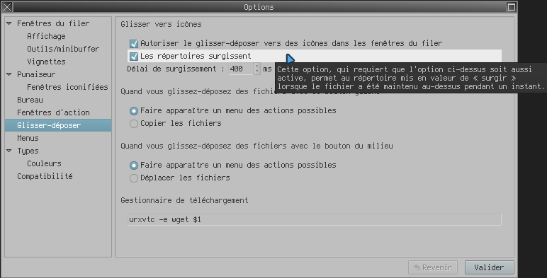

lang fr|gb

utiliser rox-filer
ROX-Filer est un gestionnaire de fichiers rapide, simple, minimal mais hautement configurable pour X11.
rox-filer dispose d'un menu contextuel très complet. vous pouvez contrôler l'action au clic sur les fichiers (classés par type ou nom), définir vos menus, trier ou renommer les fichiers/dossiers etc...
spécificités
- ouverture/édition des fichiers au simple-clic
- gestion des apperçus images/vidéos
- personnalisation des dossiers
- thème d'icones indépendant
- marque-pages éditables
- ouverture des dossiers par simple glisser-déposer
- configuration entièrement éditable depuis les menus options et contextuels
- coloration du nom des fichiers par type
- ... et pleins d'autres fonctions non-utlisées sur livarp disponibles dans le manuel de l'utilisateur sur sourceforge.net
utilisation
rox-filer accepte les raccourcis clavier communs et quelques autres:
- Ctrl+h : affiche les fichiers cachés
- Ctrl+x : efface le fichier
- Ctrl+p : affiche les propriétés
- Ctrl+f : lancer la recherche par expression
- / : lancer la navigation par adresse
- ! : lancer une commande dans le dossier en cours
les options rox-filer
au clic droit dans un client rox-filer, choisir "options" et configurer son file-manager:

les différents onglets vous permettent de configurer rox-filer
les menus rox-filer
au clic droit dans un client rox-filer, le menu rox s'ouvre et permet de régler l'affichage, le tri, la création de dossiers/fichiers...
menu affichage
menu sélection
menu nouveau
menu d'aide
menu fenêtre
au clic droit sur un dossier/fichier, le menu contextuel s'ouvre:
une pression sur "/" et la recherche est lancée (ESC pour annuler):
remarque
rox-filer utilise le simple-clic, si vous cliquez sur un script exécutable, et bien il s'exécute...
rox-filer n'utilise pas de corbeille, soyez vigilants lorsque vous effacez fichiers ou dossiers :)